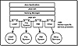
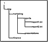

|
|
 |

|
Developing Java Enterprise Applications
by Stephen Asbury ; Scott R. Weiner
Wiley Computer Publishing, John Wiley & Sons, Inc.
ISBN: 0471327565 Pub Date: 02/01/99

|
CHAPTER 5
Using JNDI
This chapter covers the basic use of JNDI. The goal of this chapter is enable you to set up and create directory and naming service connections to access contexts via JNDI. This chapter discusses JNDI 1.1. For information on future versions of JNDI, browse the Sun Web site at http://java.sun.com/products/jndi.
JNDI provides a consistent model for accessing and manipulating enterprise resources such as the file system, CORBA, a directory service, or an application server, through Java. JNDI provides the additional benefit of allowing you to bind a Java object into these services. Figure 5.1 illustrates the JNDI architecture. At the top of the JNDI architecture is the Java application that wants to use JNDI. This application uses the javax.naming and javax.naming.directory packages to access JNDI services. The two client packages use the NamingManager, or DirectoryManager, to create the appropriate JNDI context for an application. A context represents a connection to a JNDI service provider. The code for a context is written by a JNDI service provider and implements the appropriate javax.naming.spi interfaces as well as the required interfaces from the client API. Ultimately, a service provider’s implementation talks to a data source, like LDAP, the file system or the RMI registry. Most of these connections are hidden from the user behind a set of properties used to create the context.
This chapter focuses on the services available in the javax.naming and the javax.naming.directory packages. The service provider package is not discussed in detail because it will be used only by the few programmers creating JNDI service providers.

Figure 5.1 JNDI architecture.
Setup Requirements
In order to program with JNDI, you should have the following libraries accessible from your computer:
- • JDK 1.1.2 or higher.
- • JNDI package—your CLASSPATH should include jndi.jar; otherwise, the path to jndi.jar must be included on the command line for each example in this chapter.
- • A service provider package for each service you access through JNDI.
You will need additional resources such as an LDAP server to use some of the later examples in this chapter. The CD-ROM contains the Java components you need to run the examples in this chapter; however, the final versions of the two service providers we have used were not released at publication time. To find a list of available providers and download the latest implementations provided by Sun, browse http://java.sun .com/products/jndi/serviceproviders.html. In addition, an LDAP configuration file is used with this chapter. You don’t have to use this configuration file. Using another configuration won’t affect the effectiveness of the examples, but it will produce results that differ from the examples discussed in this chapter.
If you intend to use JNDI with other directory and naming services such as CORBA, you will require additional service provider packages. The service provider is created by implementing the interfaces in the javax.naming.spi package for the specific naming service. In order to use any provider, you must put it in your CLASSPATH. For example, to use the file system service provider, you must have fscontext.jar in your CLASSPATH. The jar fscontext.jar contains the implementation of the javax.naming.spi specifically for accessing the file system.
About the Sample Service Provider
The service provider used for most of the examples in this chapter is the file system provider called FsContext. This provider allows you to access your file system as a set of file system context objects that represent directories and as file objects that represent the files in those directories. Because files are represented with java.io.File, this provider is platform independent and can be used to access the directory structure on any platform on which the Java application runs.
FsContext provides naming services and associated names, file paths, with File objects. After the chapter explores the basic features of the naming services, it examines some of the advanced features of JNDI implemented by directory services, such as attribute manipulation and attribute queries. These features require the use of another provider. We chose the LDAP service provider. If you do not have LDAP, you should be able to follow along with the examples presented here and get an understanding of how directory services can be used.
NOTE: If you do not have access to an LDAP server, you can download one from the University of Michigan Web site at www.umich.edu/~dirsvcs/ldap/ ldap.html.
The goal of this chapter is to provide an overview of JNDI. Because the JNDI interface is consistent across all service providers, little time is spent on LDAP specific issues. Instead, the focus is on general use of JNDI. If you do have LDAP and choose to load the example configuration from your CD-ROM, you should have schema checking turned off for some of the later examples. We recommend turning it off because the schema we built is not necessarily self-consistent; it was designed for educational value and not production use.
The Naming Package
The naming package provides a set of classes and interfaces that are used to access any naming service for which you have a provider. Once you have a provider, you can perform the following functions using the naming package:
- • Access a context, including listing and searching
- • Rename, move, add, replace, or remove a binding for an object
- • Store references to Java objects
This section steps through the components of the javax.naming package necessary to perform the procedures listed above.
Access a Context
The javax.naming package defines the Context interface. A context represents a starting point for a naming or directory service. The file system context in the examples for this chapter uses the set of files and directories stored on the local file system as a context. Figure 5.2 shows the directory structure used for the examples in this chapter. Because this structure represents the context in which the following naming examples are written, you should familiarize yourself with it. The CD-ROM contains a script to build the sample directory structure if you want to run the provided examples.
Once created, an object implementing the Context interface represents the root for all naming operations performed. The initial context can be thought of as the root for your file path; however, it is not always the same as the root directory in your file system. For example, it could be a subdirectory in your file system. Figure 5.3 illustrates how the marketing directory could be the root for a context.
To create a Context object, perform the following steps:
- 1. Set up the environment. JNDI uses a set of environment variables to tell it which service providers to access and how to initialize them. If you don’t set one of these values, the System properties are used. Table 5.1 lists these properties. The simplest way to assign the environment is to load a property file as described for JDBC in Chapter 3, “Basic JDBC Programming,” or create a hash table containing the environment settings. There are many properties that can be used to create a new context; study Table 5.1 carefully. However, as demonstrated in the examples in this chapter, only a few of these properties are required. In particular, the initial factory and provider URL will normally be required to create a context.
- 2. Create an initial context. JNDI requires that you have an initial context for all operations. This context is considered the root of your naming operations. For example, consider the directory structure in Figure 5.2. If an initial context is created at /, the path to report1.txt is /tmp/marketing/reports/report1.txt. However, if an initial context is created at /tmp/marketing/, the path is /reports/report1.txt.

Figure 5.2 Example directory structure.
|


){kind=link}
){kind=link}
){kind=link}
){kind=link}